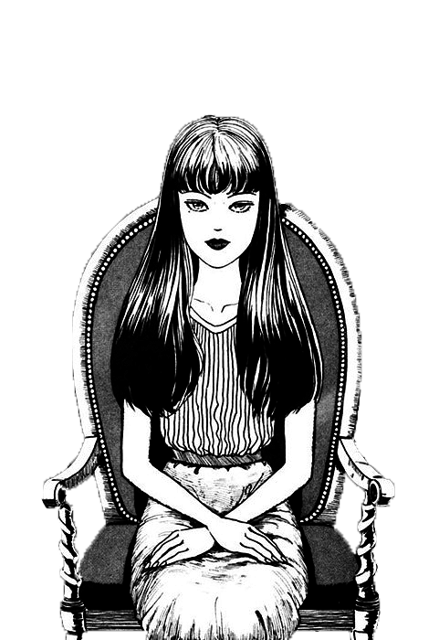

Mangás de horror
Se você é um fã do gênero de horror, é impossível não conhecer os trabalhos de Suehiro Maruo e Junji Ito. Esses dois mestres do mangá são reconhecidos por suas histórias perturbadoras e repletas de imagens grotescas e horripilantes. Cada um deles tem um estilo único e cativante, que os torna referência quando se trata de narrativas que exploram o medo e o terror.

Suehiro Maruo é um artista incrivelmente talentoso, cujos mangás são marcados por um estilo de arte detalhado e surpreendente. Ele é conhecido por suas histórias surreais e perturbadoras, muitas vezes apresentando imagens perturbadoras de violência, crueldade e tabus sociais.

O traço de Maruo é muito preciso, e suas histórias são preenchidas com imagens vívidas e fortes. Ele tem uma habilidade única em criar cenas de horror que permanecem na mente do leitor muito tempo depois de ter terminado de ler suas obras. Suas histórias podem ser consideradas verdadeiras obras de arte, mas com um toque sombrio e perturbador.

Entre as obras mais conhecidas de Suehiro Maruo estão "Mr. Arashi's Amazing Freak Show", "The Laughing Vampire" e "Shojo Tsubaki".

Junji Ito, por outro lado, é conhecido por suas histórias de horror psicológico, que exploram medos universais como a morte, a solidão e a loucura. Suas histórias apresentam personagens comuns em situações aterrorizantes, onde o terror é amplificado pela estranheza e pela sensação de impotência diante do desconhecido. Ito é mestre em criar atmosferas de terror e em transformar coisas aparentemente banais em objetos de pavor. Seus personagens são muitas vezes confrontados com criaturas sobrenaturais e situações inexplicáveis, que desafiam a lógica e a razão. O trabalho de Ito é frequentemente comparado a outros grandes nomes do horror, como Stephen King e H.P. Lovecraft.